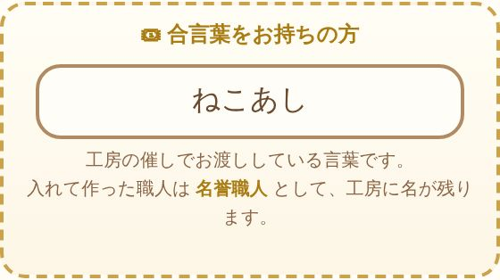
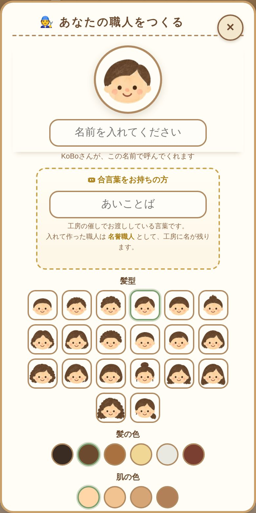
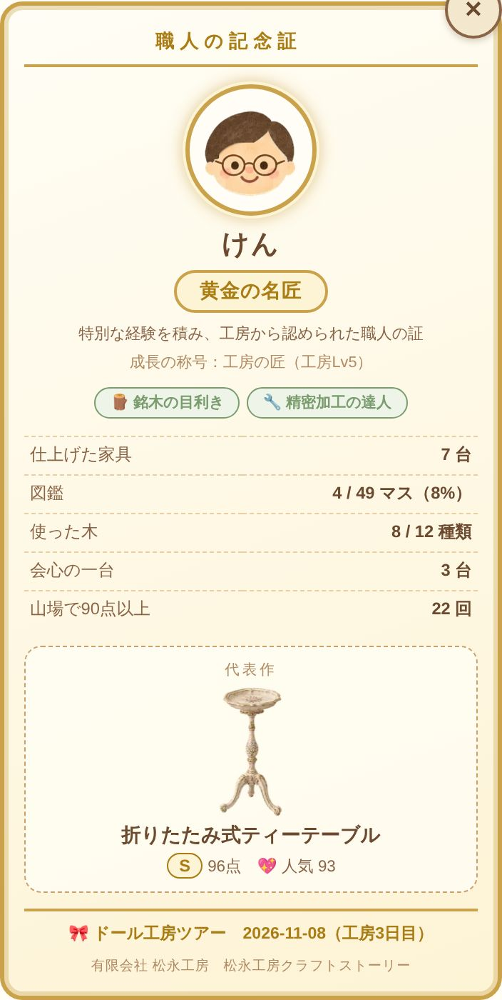
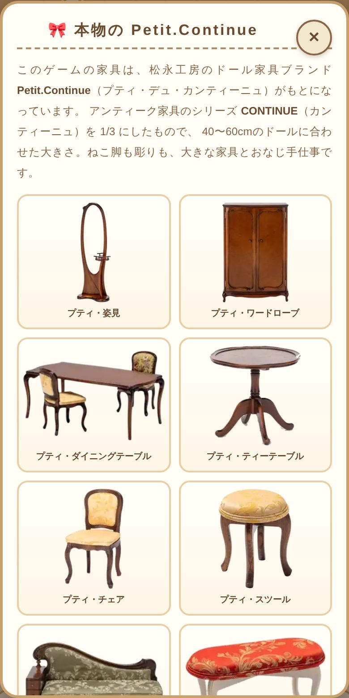
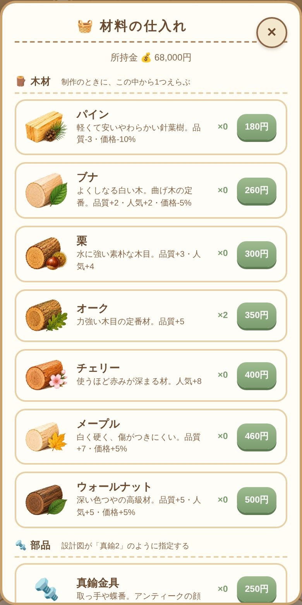
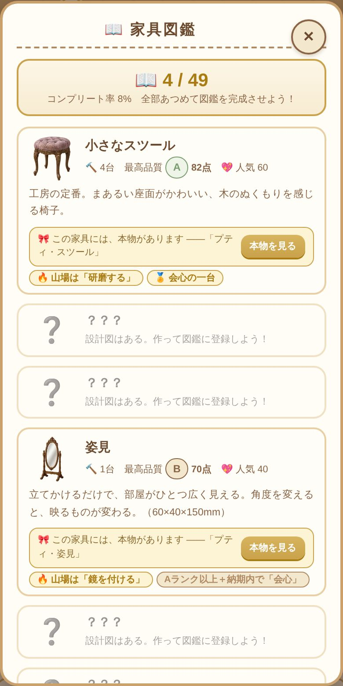
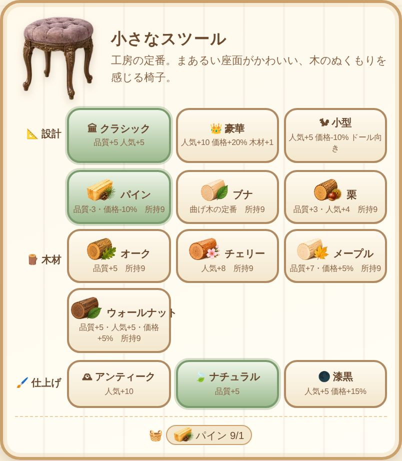

〜小さな家具と、いろいろな童話〜 催しでのご提案
催しで木のQRカードを配り、来場された方のスマホで遊んでもらう提案です。 アプリも会員登録も不要、サーバー費用はかからず、カードの実費だけで始められます。 すでに動くものができていて、いま開けば遊べます。
| 催し | ドール工房ツアー |
| 日時 | 2026年11月8日（日）13時〜 |
| 場所 | 松永工房（ショールームと工場） |
| 合言葉 | ねこあし （Petit.Continue の家具がどれも「ねこ脚」を名乗っているので、実物を見れば目に入ります） |
| 申し込み | 10月12日時点で5名 |
ゲームにもこの日付が入っていて、合言葉は11月8日と9日だけ通ります。 （夕方にお渡ししたカードを、その晩おそくに読む方のために翌日まで）
催しの当日に生まれる「待ち時間」と「買わなかったお客さま」を、商品を知ってもらう時間に変えるためです。
催しごとに合言葉を変えれば、同じしくみを何度でも使い回せます。工房の催しなら来場者全員に、ドルパのような大きな場なら購入者にだけ、という使い分けもできます。
スタッフがするのは、カードを渡すことだけです。
すでに遊んでいる方が合言葉入りのQRを読んだときは、その場で合言葉を受けとります。最初からやり直す必要はありません。

実際の画面です。スマホで開いたところを、そのまま載せています。






① 髪型20・目5・口5・めがね3・ピアス3・ひげ3・かぶりもの9。絵はすべて松永工房さんが描いたものです。 ② 顔・名前・称号・制作実績・開催日・代表作を1枚に。催しの職人は金の枠になります。 ③ 実物の写真10点。いちばん下から公式サイトへ飛べます。 ④ 木材12種の絵も、すべて松永工房さんが描いたものです。 ⑤ 実物のある家具には「この家具には、本物があります」と出て、③のページへつながります。 ⑥ 設計・木・仕上げの組み合わせで、できあがりの顔つきが変わります。
「来た人だけが得をする」を、見た目と中身の両方で作ってあります。
| ふつうの職人 | 合言葉を入れた職人 | |
|---|---|---|
| 称号 | 木工見習い → 伝説の木匠 （工房レベルで上がる） | 記念日の見習い → 祝祭の伝説 （その日の働きで上がる、別の階段） |
| 顔の枠 | ふつうの枠 | 金の額縁 |
| 工房の画面 | 職人の紹介 | 金の名札（顔・名前・称号・加わった日） |
| 職人の記念証 | 白い証書 | 金の枠の証書（開催日入り） |
| 山場の道具 | 3種 | 4種（専用の「あの日の小刀」） |
| 設計図 | 43種 | 46種（限定の3種） |
| 展示を見にくる客 | 6人 | 11人（その日の子たち5人） |
催しの称号は、レベルではなくその日に何をしたかで上がります。会場で遊ぶ数十分のあいだに、一段ずつ手が届く作りです。
| 称号 | そこまでにすること |
|---|---|
| 記念日の見習い | 合言葉を入れた（＝会場に来た） |
| 祝祭の家具職人 | 自分の手で一台 仕上げた |
| 黄金の名匠 | 限定の家具を1台、会心で仕上げた |
| 祝祭の伝説 | 限定の家具を3台とも、会心で仕上げた |
限定の設計図3種（プティ・ローズソファ、プティ・パウダーテーブル、プティ・ローズチェア）は、ふつうの職人には一生出てこない設計図です。図鑑のマスも、持っていない方には最初から数えません。これが無いと100%に届かなくなる——という不公平は起きません。
その日の子たち5人（リボンの子、白い服の子、夜色の子、赤い髪の子、いちごの子）は、好みがてんでバラバラです。どの一台を置いても全員は満足しません。そのかわり、並べ方しだいで誰かひとりは必ず足を止めます。
「家具図鑑をぜんぶ埋める」のが目的の、家具づくりゲームです。遊ぶ人は松永工房の新人職人という設定です。
| 家具 | 46種（うち限定3種）・かくし家具3種 |
| 童話 | 12話。家具に「やぶれたページ」が添ってくる |
| ミニゲーム | 10種。制作の山場を自分の手で通す |
| 工房の設備 | 22種。品質・速さ・展示枠・来館者を伸ばす |
| 仕入れ | 37品。木材12・部品12・消耗品5・静岡の名品8。木材12種はすべて松永工房さんの絵 |
| 称号 | 成長6段・専門3種・催し限定4段 |
| 職人の似顔絵 | 髪型20・髪の色6・肌の色4・目5・口5・ひげ3・めがね3・ピアス3・かぶりもの9。480万通り以上 |
木はパインから神代欅まで12種。高い木がいつでも正解ではなく、安い木は品質が下がるかわりに値段も下がります。部品は、鏡板は姿見とドレッサーに、蝶番は扉のある家具に——と、それぞれが本当に要る家具に割りふってあります。
静岡の名品は、温州みかん・静岡茶・安倍川もち・シラス丼・静岡おでん・桜えびのかき揚げ・わさび・クラウンメロンの8品。食べると集中力がもどったり、次の一台の出来が上がったりします。工房が静岡にあることが、説明なしに伝わります。
似顔絵と木材の絵は、松永工房さんに描いていただいたものです。髪の色と肌の色は、絵の明暗をそのままに塗りかえているので、水彩の風合いが消えません。
決めていただくのは、残り1つだけです。
用意していただくのは木のQRカード2種です。
| カード | 入れるURL | 渡す相手 |
|---|---|---|
| 合言葉入り | https://kijibukobo.github.io/-/game/?k=neko | 工房の催しなら来場者全員、ドルパなら購入者 |
| 合言葉なし | https://kijibukobo.github.io/-/game/ | 買わなかった方、立ち寄っただけの方 |
合言葉はひらがな・カタカナ・全角半角・空白・長音記号のちがいを吸収します。「ねこあし」でも「ネコアシ」でも「ねこ あし」でも通るので、口頭で伝えてもつまずきません。
開催日を入れるのも、合言葉を変えるのも、プログラムの1行を書きかえるだけです。次の催しを足すときも、同じく1行です。
あとで困らないよう、先に書いておきます。
かかるのは木のQRカードの実費だけです。サーバー代も、アプリの審査も、月々の利用料もありません。GitHub Pages で公開していて、これは無料です。
木のカードは工房で作れます。これ自体が「工房が作ったもの」として持ち帰ってもらえるものになります。
11月8日で試してみて、手応えがあればですが：
いずれも、いまの作りの延長です。作り直す必要はありません。
合言葉は11月8日まで通りませんが、その日のつもりで動かして見ることはできます。 下のURLを開くと、11月8日ということにして動きます（けいこ用です。木のカードには付けないでください）。
このゲームは1枚のHTMLファイルでできています。外部のライブラリなし、通信なし、インストール不要。 スマホ・タブレット・PCのどのブラウザからでも、同じURLで遊べます。